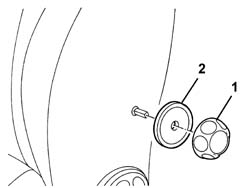

7045A25 squab lumbar knob - r r
- Path
- Procedures > 70 FITTINGS > 7045 FRONT SEATS > 7045A front seat assembly > 7045A25 squab lumbar knob - r r
- Kind
- repair procedure (removal / refitting; the operation number is the code)
- Applies to
- all engines; all production periods
- Interactive page
- https://sloeber94.github.io/elrnDB-a147/en/#/3025842
Applies to: all engines; all production periods
 Removing
Removing
 Refitting
Refitting1. Release the knob using the special tool.
 | Name | Country |
|---|---|---|
1 | Scraper blade | 1.823.014.000 |
2. Remove the support washer.

Applies to: all engines; all production periods
Refitting
RemovingCheck that the knob is not damaged.
Fit the support washer.
Fit the knob lining up the reference on the bearing.
Check that the knob is working properly and also the device it controls.
Topics that link to this page (13)
- O10 FRONT SEAT LUMBAR ADJUSTMENT NOT WORKING
- 5580C44 front side bag module one lh or rh r r
- 5580C86 side bag wiring harness (one) lh or rh - r r or replace
- 7045A38 device for driver`s seat squab lumbar adjustment - r r with seat removed
- 7045A84 Front set BACKREST COVER - R.R. with seat removed
- 7045A85 Front seat BACKREST COVER, left or right - R.R.
- 7045A88 Front seat BACKREST UPHOLSTERY, left or right - R.R. with seat removed
- 7045A89 Front seat BACKREST UPHOLSTERY, left or right - R.R .
- 7045A92 Front seat COVER, left or right - R.R. with seat removed
- 7045A93 Front seat TRIM, left or right - R.R .
- 7045B10 l/h or r/h front seat head restraint - r+r
- 7045L30 Backrest folding control CABLE/ROD - R.R.
- 7045M26 l/h or r/h front seat squab heat pad - r+r following electrical wiring check